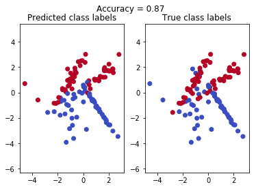
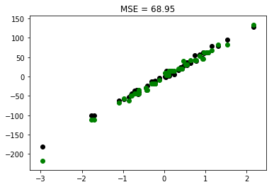
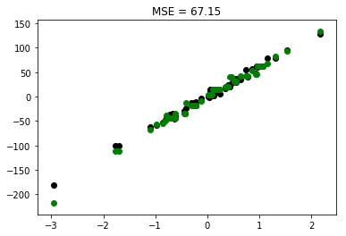

Here we will implement the Decision Tree algorithm and compare our algorithm’s performance with decision trees from sklearn.tree. Purpose of this excercise is to
write minimal implementation to understand how theory becomes code, avoiding layers of abstraction.
Decision Trees are a non-parametric supervised learning method used for classification and regression. The goal of decision tree is to learn simple decision rules from training data and use those rules to predict target value for test data.
Mathematical formulation
Given training data $X$ , of shape $[N$ x $D]$ and a label vector $y$ of shape $[N$ x $K]$, (where $N$ is number of samples, $D$ is number of features, $K$ is number of labels) a decision tree recursively partitions the space such that the samples with the same labels are grouped together.
Let the data at $m$ node represented by $X$. For each candidate split $\theta = (j, t_m)$ consisting of a feature $j$ and threshold $t_m$, partition the data into $X_l$ and $X_r$ subsets
$$ X_l(\theta) = {(X, y) | X_j <= t_m } $$
$$X_r(\theta) = X \setminus X_l(\theta)$$
The impurity at $m$ node is computed using an impurity function $F(X)$, the choice of which depends on the task being solved (classification or regression)
Select the parameters $\theta = (j, t_m)$ for an optimal partition at a given $m$ node that minimises the impurity at left and right nodes. This will be acheived by maximizing below function.
$$ Q(X, j, t_m) = F(X) - \dfrac{|X_l|}{|X|} F(X_l) - \dfrac{|X_r|}{|X|} F(X_r) $$
Recurse for subsets $X_l$ and $X_r$ until…
max_depththe maximum allowable depth of tree is reached,- number of samples in a node are less than
min_samples_splitor equal to 1
Classification criteria
If a target is a classification outcome taking on values $0,1,…,K-1$, for node $m$, representing a region $R_m$ with $N_m$ observations, let $p_i$ be the fraction of the samples of the $i$-th class in the dataset $X_m$.
$$p_i = \dfrac{1}{N_m} \sum_{x_i \in R_m} I(y_i = k)$$
Common measure of impurity are
- Gini
$$F(X_m) = 1 -\sum_{i = 1}^K p_i^2$$
- Entropy
$$F(X_m) = -\sum_{i = 1}^K p_i \log_2(p_i)$$
Regression criteria
If the target is a continuous value, then for node $m$, representing a region $R_m$ with $N_m$ observations, common criteria to minimise as for determining locations for future splits are Mean Squared Error, which minimizes the L2 error using mean values at terminal nodes, and Mean Absolute Error, which minimizes the L1 error using median values at terminal nodes.
$$ \hat{y} = \dfrac{1}{N_m}\sum_{x_i \in X}y_i$$
- Mean Squared Error (variance)
$$F(X_m) = \dfrac{1}{N_m} \sum_{x_j \in N_m}(y_j - \hat{y})^2$$
- Mean Absolute Error
$$F(X_m) = \dfrac{1}{N_m} \sum_{x_j \in N_m}|(y_j - \hat{y})|$$
- mad_median - Mean deviation from the median
Implementation
Specification:
- Inherit our
DecisionTreeclass fromsklearn.BaseEstimator class constructor parameters:
max_depth- maximum allowable depth of the tree (numpy.infby default)min_samples_split- the minimum number of samples in a node for splitting to be done (2 by default)criterion- criterion to use for data split,giniby default)
- the class has several methods:
fit,predictandpredict_proba; - the
fitmethod takes the matrix of instancesXand a target vectory(numpy.ndarrayobjects) and returns an instance of the classDecisionTreerepresenting the decision tree trained on the dataset(X, y)according to parameters set in the constructor; - the
predict_probamethod takes the matrix of instancesXand returns the matrixPof a sizeX.shape[0] x K, whereKis the number of classes and $p_{ij}$ is the probability of an instance in $i$-th row ofXto belong to class $j \in {1, \dots, K}$. - the
predictmethod takes the matrix of instancesXand returns a prediction vector; in case of classification, prediction for an instance $x_i$ falling into leaf $L$ will be the class, mostly represented among instances in $L$. In case of regression, it’ll be the mean value of targets for all instances in leaf $L$.
import numpy as np
from matplotlib import pyplot as plt
from sklearn.base import BaseEstimator
from sklearn.datasets import make_classification, make_regression
from sklearn.model_selection import train_test_split
from sklearn.metrics import accuracy_score, mean_squared_errorLet’s fix random_state (a.k.a. random seed) beforehand.
RANDOM_STATE = 17# Classification criterion functions
def entropy(y):
P = [len(y[y==k]) / len(y) for k in np.unique(y)]
return -1 * np.dot(P, np.log2(P))
def gini(y):
P = [len(y[y==k]) / len(y) for k in np.unique(y)]
return 1 - np.dot(P, P)
# Regression criterion functions
def variance(y):
return np.var(y)
def mad_median(y):
return np.mean(np.abs(y-np.median(y)))
# Dictionary for easy mapping with input string
criterion_dict = {'entropy': entropy,
'gini': gini,
'mse': variance,
'mad_median' : mad_median}# Target prediction functions
# the most popular class in leaf
def classification_leaf(y):
return np.bincount(y).argmax()
# the mean of all values in a leaf
def regression_leaf(y):
return np.mean(y)The Node class represents a node in the decision tree.
class Node():
def __init__(self, feature_idx=0, threshold=0, labels=None, left=None, right=None):
self.feature_idx = feature_idx
self.threshold = threshold
self.labels = labels
self.left = left
self.right = rightclass DecisionTree(BaseEstimator):
def __init__(self, max_depth=np.inf, min_samples_split=2,
criterion='gini', debug=False):
params = {'max_depth': max_depth,
'min_samples_split': min_samples_split,
'debug' : debug,
'criterion' : criterion}
super(DecisionTree, self).set_params(**params)
self._criterion_fun = criterion_dict[self.criterion]
if self.criterion in ['mse', 'mad_median']:
self._leaf_value = regression_leaf
else:
self._leaf_value = classification_leaf
if debug:
print("DecisionTree")
print(f"max_depth: {self.max_depth}, min_samples_split: {self.min_samples_split}, \
criterion: {self.criterion}, debug: {self.debug}")
# A functional returns the gain achieved if we split the data at given feature and threshold value
#
def _functional(self, X, y, feature_idx, threshold):
if threshold is np.nan:
return 0
mask = X[:,feature_idx] < threshold
X_l = X[ mask ]
y_l = y[ mask ]
X_r = X[ ~mask ]
y_r = y[ ~mask ]
# if all the data goes to one of the child
if len(X_l) == 0 or len(X_r) == 0:
return 0
return self._criterion_fun(y) - \
(X_l.shape[0]/X.shape[0])* self._criterion_fun(y_l) - \
(X_r.shape[0]/X.shape[0])* self._criterion_fun(y_r)
# recursive function to split the data and form nodes
#
def _build_tree(self, X, y, depth = 1):
# We already reached to the max_depth, so time to leave recursion
# by creating a leaf Node
if depth > self.max_depth:
return Node(labels=y)
n_samples, n_features = X.shape
# We do not have sufficient samples to split
if n_samples < self.min_samples_split:
return Node(labels=y)
# If all objects in a current vertex have the same values in answers
# then the value of the functional will be 0 for all partitions.
# So in this case the vertex is a leaf. In order not to make unnecessary calculations,
# perform this check before the main cycle.
if len(np.unique(y)) == 1:
return Node(labels=y)
# Here we are trying to split the data such that we will have maximun
# gain out of split.
# We will simulate the split for each unique value of each feature and
# calculate the functional gain. On evey account of finding the maximum gain
# from the previous we will keep storing the feature index and threshold value
# which gave this gain.
# At the end of this search we will have the best feature index and threshold
# value we should use to split the data into left and right nodes.
max_gain = 0
best_feat_idx = 0
best_threshold = 0
for feature_idx in range(n_features):
all_thresholds = np.unique(X[:,feature_idx])
all_gain = [self._functional(X, y, feature_idx, threshold) for threshold in all_thresholds]
threshold_idx = np.nanargmax(all_gain)
if all_gain[threshold_idx] > max_gain:
max_gain = all_gain[threshold_idx]
best_feat_idx = feature_idx
best_threshold = all_thresholds[threshold_idx]
# Split data at this best feature and threshold
mask = X[:,best_feat_idx] < best_threshold
return Node(best_feat_idx, best_threshold, labels=None, # We need to cache labels only at leaf node
left = self._build_tree(X[mask], y[mask], depth+1), # continue to build on left side
right = self._build_tree(X[~mask], y[~mask], depth+1)) # continue to build on right side
def fit(self, X, y):
'''the method takes the matrix of instances X and a target vector y (numpy.ndarray objects)
and returns an instance of the class DecisionTree representing the decision tree trained on the
dataset (X, y) according to parameters set in the constructor'''
# remember the number classes for classification task
if self.criterion in ['gini', 'entropy']:
self._n_classes = len(np.unique(y))
self.root = self._build_tree(X, y)
return self
# predict only for one object
def _predict_object(self, x):
# Traverse from root to leaf node
node = self.root
while node.labels is None:
node = node.left if x[node.feature_idx] < node.threshold else node.right
# calculate the prediction
return self._leaf_value(node.labels)
def predict(self, X):
'''the method takes the matrix of instances X and returns a prediction vector;
in case of classification, prediction for an instance xi falling into leaf L will be the class,
mostly represented among instances in L .
In case of regression, it will be the mean value of targets for all instances in leaf L'''
return np.array([self._predict_object(x) for x in X])
def _predict_prob_object(self, x):
node = self.root
while node.labels is None:
node = node.left if x[node.feature_idx] < node.threshold else node.right
# calculate the probability of each class
# i.e number of labels of class k / total number of labels
return [len( node.labels[node.labels == k] ) / len(node.labels)
for k in range(self._n_classes)]
def predict_proba(self, X):
'''the method takes the matrix of instances X and returns the matrix P of a size [X.shape[0] x K],
where K is the number of classes and Pij is the probability of an instance in i -th row of X
to belong to class j∈{1,…,K}'''
return np.array([self._predict_prob_object(x) for x in X])Testing the implemented algorithm
Classification
# Prepare a synthetic data for classification
X, y = make_classification(n_features=2, n_redundant=0, n_samples=400,
random_state=RANDOM_STATE)
X_train, X_test, y_train, y_test = train_test_split(X, y, test_size=0.3,
random_state=RANDOM_STATE)# print results of trained classification model
def print_results_clf(model):
y_pred = model.predict(X_test)
prob_pred = model.predict_proba(X_test)
accuracy = accuracy_score(y_test, y_pred)
print("Accuracy: {0:.2f}".format(accuracy))
if (sum(np.argmax(prob_pred,axis=1) - y_pred) == 0):
print('predict_proba works!')
plt.suptitle("Accuracy = {0:.2f}".format(accuracy))
plt.subplot(121)
plt.scatter(X_test[:, 0], X_test[:, 1], c=y_pred, cmap=plt.cm.coolwarm)
plt.title('Predicted class labels')
plt.axis('equal')
plt.subplot(122)
plt.scatter(X_test[:, 0], X_test[:, 1], c=y_test, cmap=plt.cm.coolwarm)
plt.title('True class labels')
plt.axis('equal');Test our implementation results
clf1 = DecisionTree(max_depth=4, min_samples_split=2, criterion='entropy')
clf1.fit(X_train, y_train)
print_results_clf(clf1)Accuracy: 0.87
predict_proba works!
Now compare our results with sklearn
from sklearn.tree import DecisionTreeClassifierclf2 = DecisionTreeClassifier(max_depth=4, min_samples_split=2, criterion='entropy')
clf2.fit(X_train, y_train)
print_results_clf(clf2)Accuracy: 0.88
predict_proba works!Our classifier results are pretty close to the sklearn.
Regression
# Prepare a synthetic data for regression
X, y = make_regression(n_features=1, n_samples=200, bias=0, noise=5,
random_state=RANDOM_STATE)
X_train, X_test, y_train, y_test = train_test_split(X, y, test_size=0.3, random_state=RANDOM_STATE)# print results of trained regression model
def print_results_reg(model):
y_pred = model.predict(X_test)
mse = mean_squared_error(y_test, y_pred)
print("Mean Squared Error: {0:.2f}".format(mse))
plt.scatter(X_test[:, 0], y_test, color='black')
plt.scatter(X_test[:, 0], y_pred, color='green')
plt.title("MSE = {0:.2f}".format(mse));Test our implementation results
reg1 = DecisionTree(max_depth=6, min_samples_split=2, criterion='mse')
reg1.fit(X_train, y_train)
print_results_reg(reg1)Mean Squared Error: 68.95
Now compare our results with sklearn
from sklearn.tree import DecisionTreeRegressorreg2 = DecisionTreeRegressor(max_depth=6, min_samples_split=2, criterion='mse')
reg2.fit(X_train, y_train)
print_results_reg(reg2)Mean Squared Error: 67.15
Mean squared error are expected to be lower.
Our regressor is also pretty close to the sklearn regressor.
Great, we acheived competitive results as of standard library.